g r e e c e
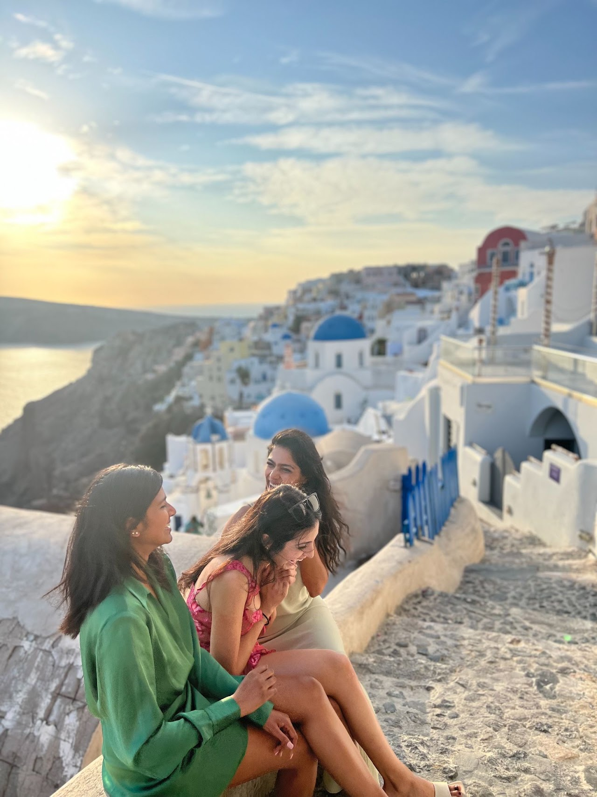
Sisterhood of traveling pants, anyone?
I watched this age-old chick flick on my flight to Athens (yes I'm a late bloomer). The movie really isn't anything special (fight me), but that type of friendship is enviable. Four girlfriends of mine and I embarked on this trip - slightly strangers in all honesty - and came back as better friends, those you feel like you can be your true and authentic selves with.
Greece is a beautiful country. We were there off-season, where most of the islands were closed, and temperatures were a bit chillier. But that only made it more special, a place where we had the island for ourselves, our laughs echoing off the empty streets, and us being nothing but us.
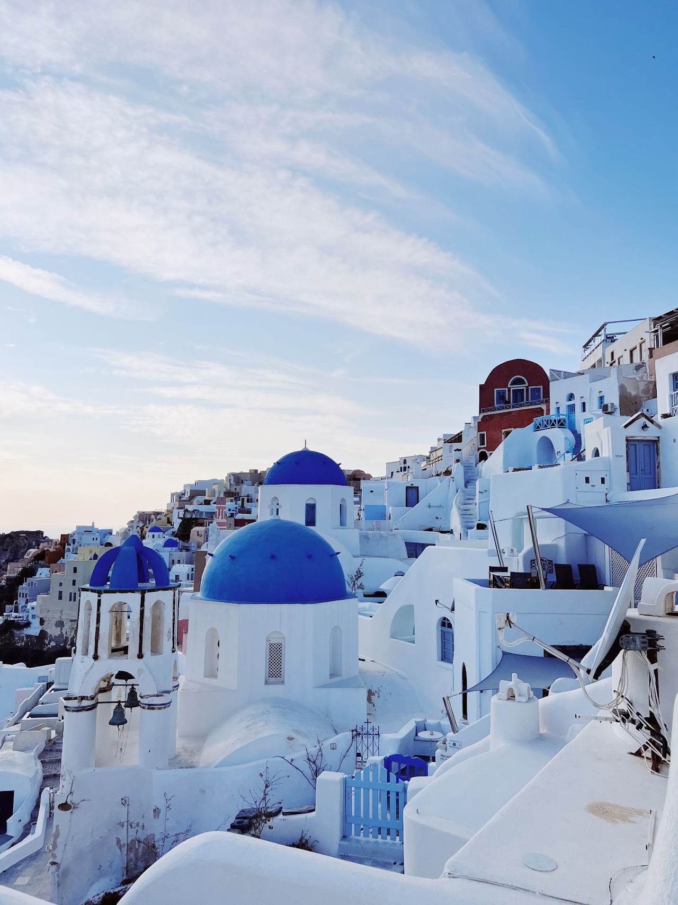
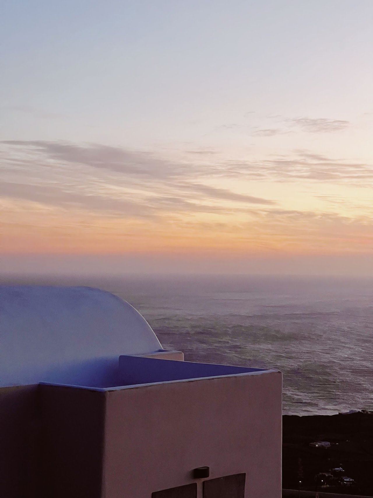
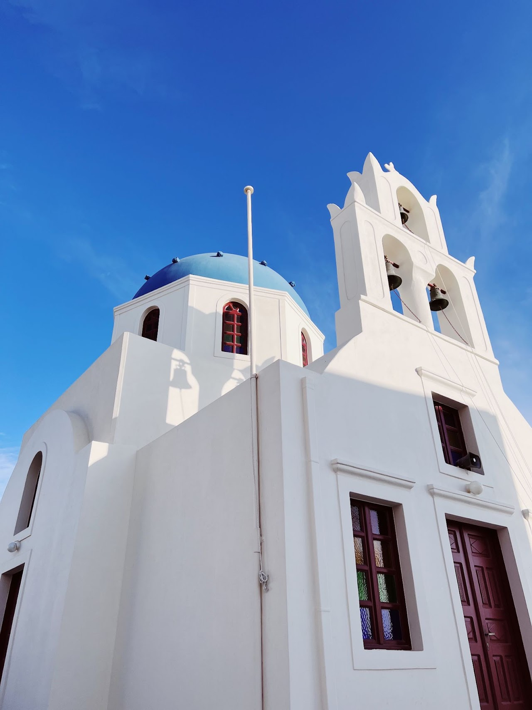
the blue domes of Oia

the ruins of Knossos Palace

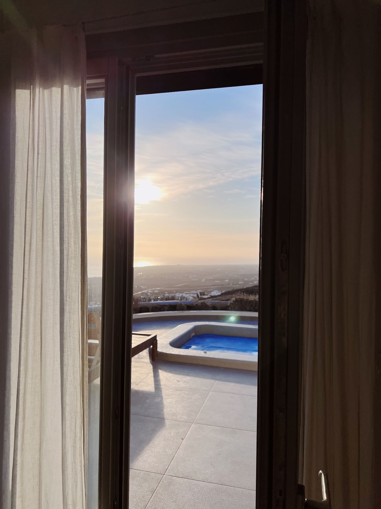
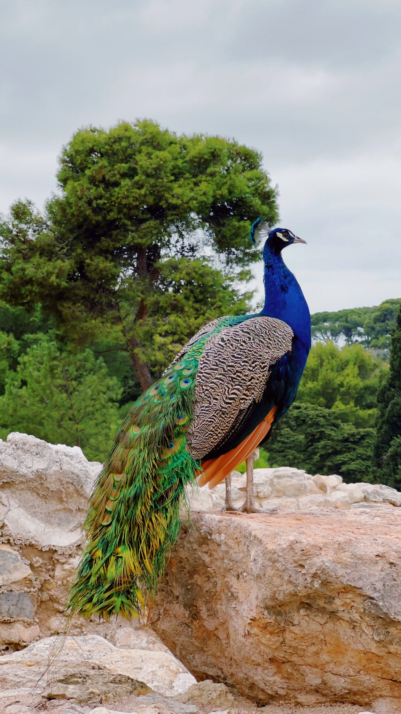
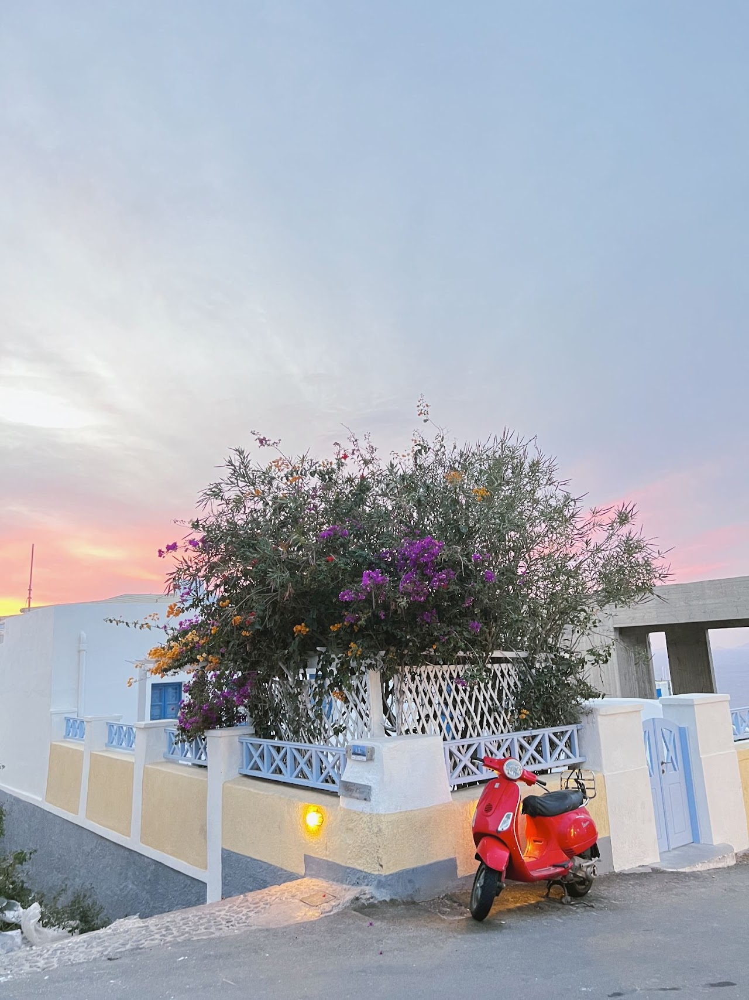


random finds through the streets of Crete and Santorini

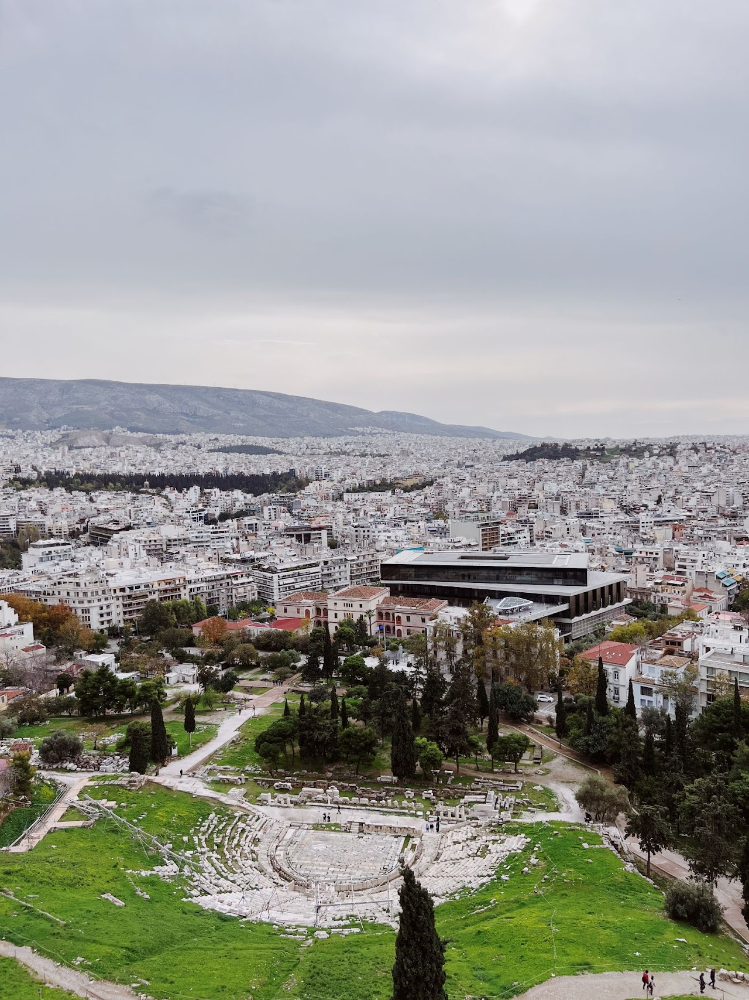
Athens
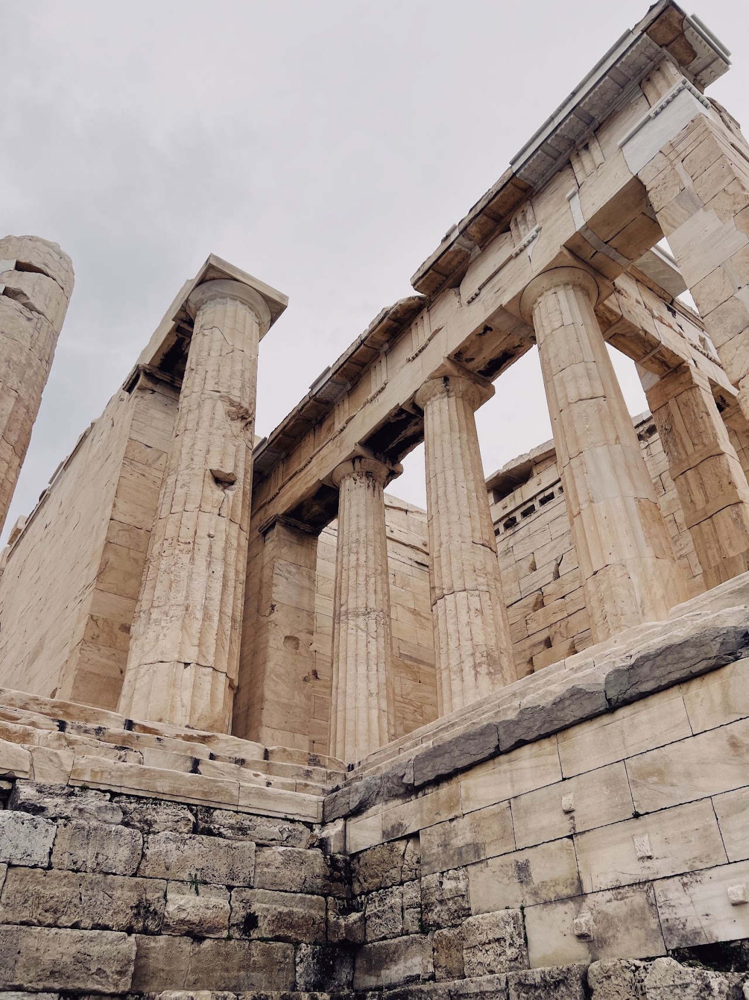
A rough itinerary
We ended up winging this trip more than planned, but with it being off-season that made it super easy.
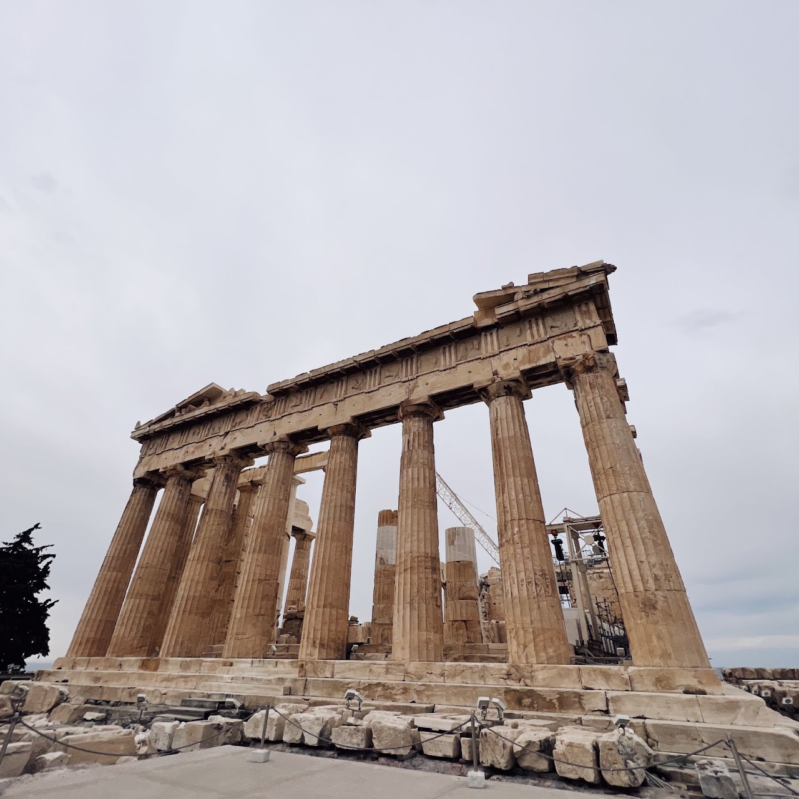
1 day in Athens
The Acropolis and the surrounding neighborhoods were beautiful to walk through.

3 days in Crete
This island surprised me with variety of things we could do - from hiking, to pink beaches to the Samaria Gorge - it was filled to the brim with beauty.
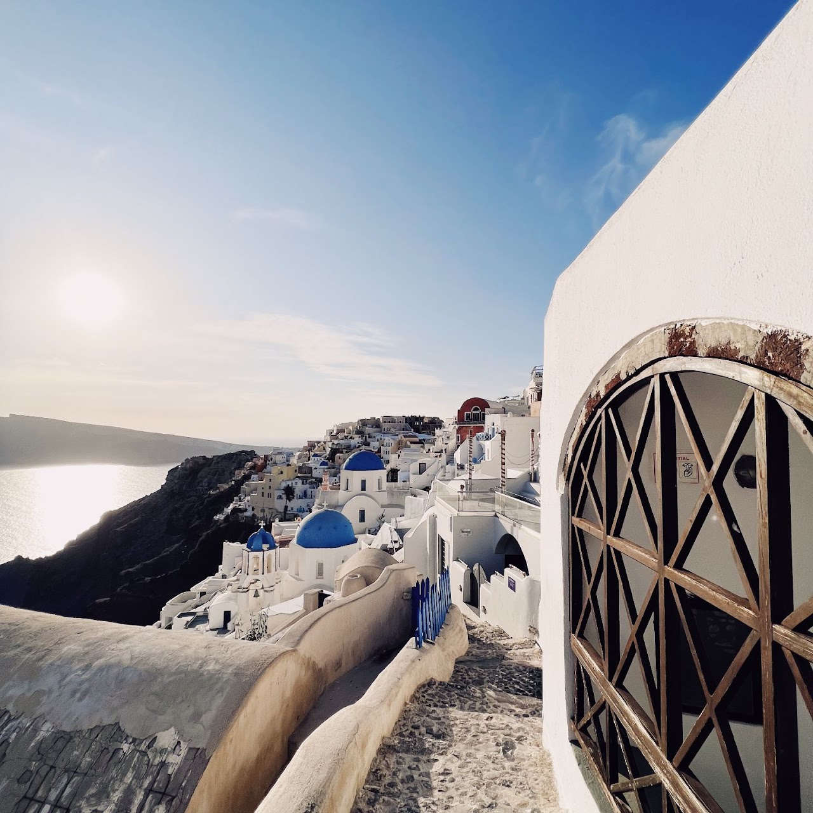
4 days in Santorini
They don't exaggerate the blueness of this island.